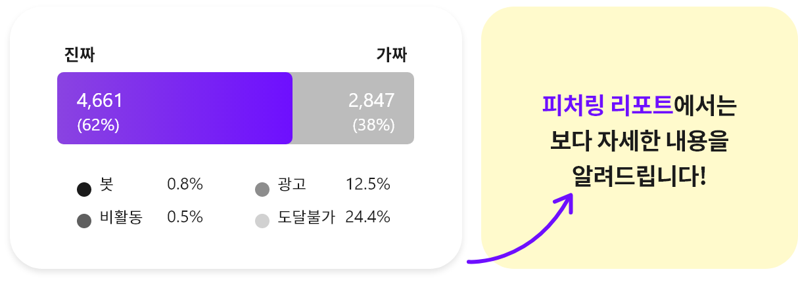

Fake vs. Real
Fake vs. Real
Fake 판별로 시작하는
성공적인 인플루언서 마케팅
무료로 이용해 보세요.
Example Fake vs. Real
리스트업 목적
인플루언서 성별
인플루언서 연령
팔로워 수
Apps 에서는 8가지 세부 필터링으로 캠페인에 알맞은 인플루언서를 추천합니다.
-

accountname
일상 패션 뷰티
팔로워 726,666 팔로잉 438
진짜팔로워
2,130,000
전체 2,150,000명 중 500,000명이 진짜입니다.
피처링이 말하는 Fake란, 마케팅에 유의하지 않은 계정입니다.
- Fake 분류 기준
- 매크로(봇)
- 비활동 계정
- 광고 계정
- 도달불가

눈으로는 확인하기 어려운
가짜 팔로워 구별
피처링은 AI 기술과 수억 건의 데이터 분석을 통해 피드나
통계로는 확인이 어려운 가짜 팔로워를 걸러내고, 실제 활동
중이며 마케팅에 유의미한 팔로우 유저들을 알려드립니다.
통계로는 확인이 어려운 가짜 팔로워를 걸러내고, 실제 활동
중이며 마케팅에 유의미한 팔로우 유저들을 알려드립니다.